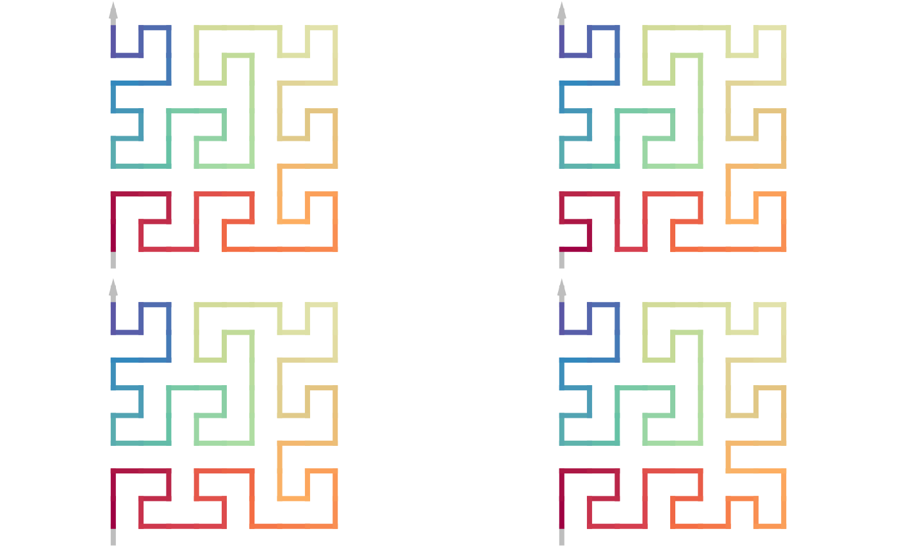
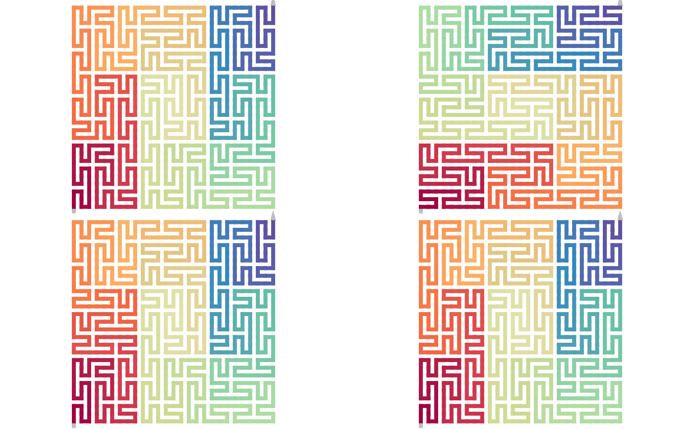

Flip units
Usage
unit_orientation(p, index = "")
# S4 method for sfc_nxn
sfc_flip_unit(p, index = "", to = NULL)
# S4 method for sfc_unit
sfc_flip_unit(p, bases)Arguments
- p
The corresponding object.
- index
A string of digits representing the path on the hierarchy of the curve. The left side corresponds to the lower level and the right side corresponds to the high level in the curve. For the Hilbert curve, the digits can only be 1-4, and for the Peano and Meander curves, the digites can be 1-9. See examples in
sfc_index(). The value can also be a vector where each flipping is applied in sequence.- to
The orientation to flip to. If the specified unit already has such orientation, the function returns the original curve.
- bases
Normally use
BASE_LIST.
Value
unit_orientation() returns a string one of "vertical", "horizontal", "diagonal_1" and "diagonal_-1".
sfc_flip_unit returns an sfc_nxn object.
Details
For unit_orientation(), it first reduce the unit to level-1, then it checks the orientation
of the line connected by the in-corner and out-corner.
An unit in the curve is represented as a square block (2^k x 2^k for the Hilbert curve and 3^k x 3^k for the Peano and Meander curves, k between 1 and the level of the curve).
In the Hilbert curve, if an unit can be flipped, it is symmetric, thus flipping in the Hilbert curve does not change its form.
The flipping is mainly applied on the Peano curve and the Meander curves. Peano curve only allows flippings by the diagonals and the Meander
curve only allows flipping horizontally or vertically. The type of flipping is choosen automatically in the function.
Examples
p = sfc_meander("I", 11)
draw_multiple_curves(
p,
sfc_flip_unit(p, "1"), # bottom left
sfc_flip_unit(p, "2"), # bottom middle
sfc_flip_unit(p, "3"), # bottom right
title = FALSE, nrow = 2)

p = sfc_peano("I", level = 3)
draw_multiple_curves(
p,
sfc_flip_unit(p, ""),
sfc_flip_unit(p, "2"),
sfc_flip_unit(p, "2:1"),
title = FALSE, nrow = 2)

p = sfc_peano("I", level = 2)
draw_multiple_curves(p,
sfc_flip_unit(p, c("4", "7")),
sfc_flip_unit(p, c("1", "2", "3", "5", "6", "8", "9")),
title = FALSE, nrow = 1)